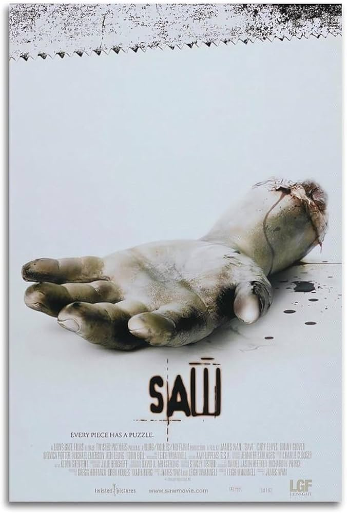

Saw
mini resumen: La película cuenta una narración no lineal que gira en torno al misterio del asesino Jigsaw, que pone a prueba la voluntad de vivir de sus víctimas sometiéndolas a "juegos" mortales en los que deben infligirse un gran dolor físico para sobrevivir. La trama sigue a las últimas víctimas de Jigsaw (Whannell y Elwes), que despiertan en un gran cuarto de baño en ruinas, y a una de ellas se le ordena matar a la otra para salvar a su propia familia.
Créditos y reparto
| Dirección y guion: | Clive Barker |
| Producción: | Christopher Figg |
| Basada en: | The Hellbound Heart,de Clive Barker |
| Música: | Christopher Young |
| Fotografía: | Robin Vidgeon |
| Montaje: | Robin Vidgeon, Tony Randel |
| País: | Reino Unido |
| Fecha de estreno | 10 de septiembre de 1987 (Londres) |
| genero | Terror, Gore |
| Duración: | 94 minutos |
| Clasificación: | +18 (en la mayoria de los País:es) |